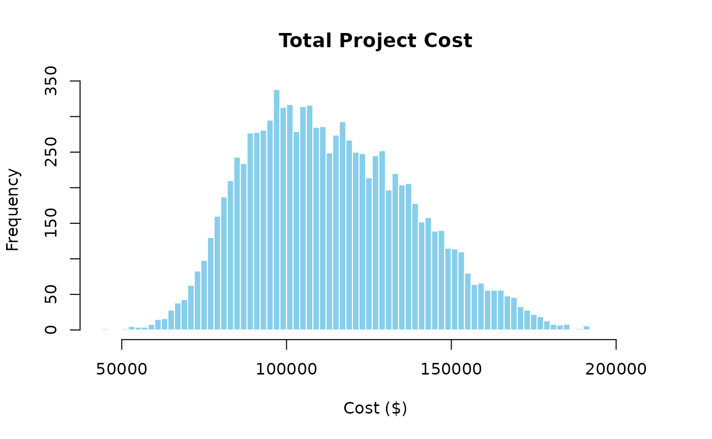
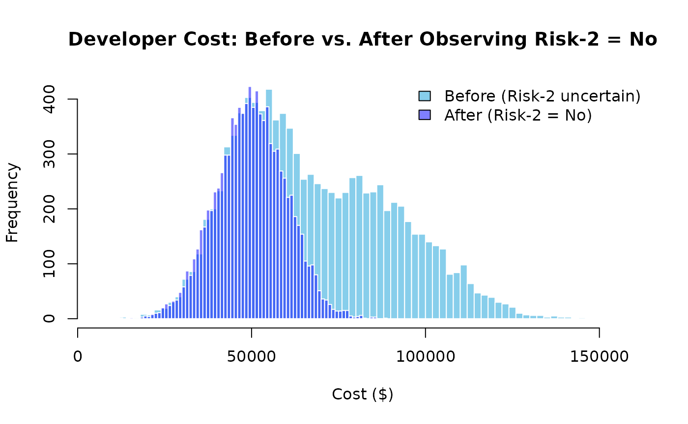
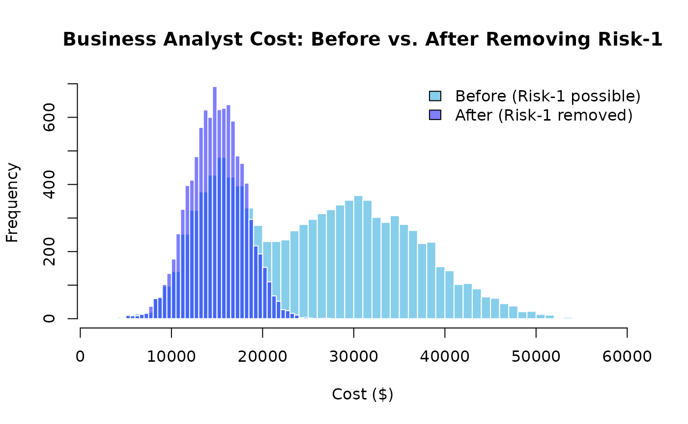

Introduction
Bayesian networks are probabilistic graphical models that represent variables and their conditional dependencies via a directed acyclic graph (DAG). Nodes represent random variables and edges represent dependencies between them. Bayesian networks are well-suited to project risk analysis because they can model how risk events propagate through resources and tasks to affect total project cost.
This vignette walks through a simple toy project to illustrate how to
build, simulate, update, and learn from a Bayesian network using the
PRA package. For a more advanced example covering causal
inference, graph surgery, and the see-versus-do distinction across a
full project portfolio, see the Probabilistic
Networks for Project Portfolio Risk Analysis vignette.
Project
Tasks
Consider a small software development project with three tasks.
tasks <- data.frame(
ID = c("F", "G", "H"),
Label = c("Task-1", "Task-2", "Task-3"),
Task = c("Requirements and Design", "Development", "Testing and Handover")
)
knitr::kable(tasks, caption = "Project Tasks")| ID | Label | Task |
|---|---|---|
| F | Task-1 | Requirements and Design |
| G | Task-2 | Development |
| H | Task-3 | Testing and Handover |
Resources
Each task draws on one primary resource. The table below shows the baseline cost estimate (mean and standard deviation) for each resource.
resources <- data.frame(
ID = c("C", "D", "E"),
Label = c("Resource-1", "Resource-2", "Resource-3"),
Resource = c("Business Analyst", "Developer", "QA Engineer"),
Task_ID = c("F", "G", "H"),
Task = c("Requirements and Design", "Development", "Testing and Handover"),
Mean = c(15000, 50000, 20000),
SD = c(3000, 10000, 4000)
)
knitr::kable(resources, caption = "Project Resources")| ID | Label | Resource | Task_ID | Task | Mean | SD |
|---|---|---|---|---|---|---|
| C | Resource-1 | Business Analyst | F | Requirements and Design | 15000 | 3000 |
| D | Resource-2 | Developer | G | Development | 50000 | 10000 |
| E | Resource-3 | QA Engineer | H | Testing and Handover | 20000 | 4000 |
Risks
Two risk events can escalate resource costs if they occur.
risks <- data.frame(
Risk_ID = c("A", "B"),
Name = c("Risk-1", "Risk-2"),
Risk = c("Requirements Scope Creep", "Technical Complexity"),
Probability = c(0.70, 0.60),
Resource_ID = c("C", "D"),
Resource_Impacted = c("Business Analyst", "Developer"),
Mean_if_occurs = c(30000, 80000),
SD_if_occurs = c(8000, 20000)
)
knitr::kable(risks, caption = "Project Risks")| Risk_ID | Name | Risk | Probability | Resource_ID | Resource_Impacted | Mean_if_occurs | SD_if_occurs |
|---|---|---|---|---|---|---|---|
| A | Risk-1 | Requirements Scope Creep | 0.7 | C | Business Analyst | 30000 | 8000 |
| B | Risk-2 | Technical Complexity | 0.6 | D | Developer | 80000 | 20000 |
If Risk-1 (Requirements Scope Creep) occurs, the Business Analyst cost rises from a baseline of $15,000 to a risk-adjusted mean of $30,000. If Risk-2 (Technical Complexity) occurs, the Developer cost rises from $50,000 to $80,000. The QA Engineer cost is not directly affected by either risk.
Bayesian Network
A Bayesian network models the full dependency chain from risks through resources to total project cost.
Nodes
Nodes represent all variables in the network: risk events, resources, tasks, and the project total.
nodes <- data.frame(
id = c("A", "B", "C", "D", "E", "F", "G", "H", "I"),
label = c(
"Risk-1", "Risk-2",
"Resource-1", "Resource-2", "Resource-3",
"Task-1", "Task-2", "Task-3",
"Project"
),
group = c(
"Risk", "Risk",
"Resource", "Resource", "Resource",
"Task", "Task", "Task",
"Project"
),
stringsAsFactors = FALSE
)Edges
Edges encode the causal dependencies: risks affect resources, resources drive tasks, and tasks roll up to the project total.
links <- data.frame(
source = c("A", "B", "C", "D", "E", "F", "G", "H"),
target = c("C", "D", "F", "G", "H", "I", "I", "I"),
value = rep(1, 8),
stringsAsFactors = FALSE
)Distributions
Each risk is a binary discrete node (1 = occurs, 0 = does not occur). Each resource is a conditional node that follows a higher-cost distribution if its associated risk occurs, and a lower-cost baseline otherwise. Tasks and the project total are aggregate nodes that sum their inputs.
distributions <- list(
A = list(type = "discrete", values = c(1, 0), probs = c(0.70, 0.30)),
B = list(type = "discrete", values = c(1, 0), probs = c(0.60, 0.40)),
C = list(
type = "conditional", condition = "A",
true_dist = list(type = "normal", mean = 30000, sd = 8000),
false_dist = list(type = "normal", mean = 15000, sd = 3000)
),
D = list(
type = "conditional", condition = "B",
true_dist = list(type = "normal", mean = 80000, sd = 20000),
false_dist = list(type = "normal", mean = 50000, sd = 10000)
),
E = list(type = "normal", mean = 20000, sd = 4000),
F = list(type = "aggregate", nodes = c("C")),
G = list(type = "aggregate", nodes = c("D")),
H = list(type = "aggregate", nodes = c("E")),
I = list(type = "aggregate", nodes = c("F", "G", "H"))
)Graph
The network can be visualized with the igraph and
networkD3 packages.
library(igraph)
library(networkD3)
g <- graph_from_data_frame(graph$links, vertices = graph$nodes, directed = TRUE)
d3g <- igraph_to_networkD3(g, group = graph$nodes$group)
forceNetwork(
Links = d3g$links, Nodes = d3g$nodes, NodeID = "name", Group = "group",
Value = "value", zoom = TRUE, legend = TRUE, arrows = TRUE,
opacity = 0.8, fontSize = 14
)Inference
Use prob_net_sim() to forward-simulate the network and
estimate the total project cost distribution.
sim_results <- prob_net_sim(graph, num_samples = 10000)
hist(sim_results$I, breaks = 60,
main = "Total Project Cost", xlab = "Cost ($)",
col = "skyblue", border = "white")
The spread of the distribution reflects compounded uncertainty from both risk events. The right tail represents scenarios where both risks occur simultaneously.
Learning
Use prob_net_learn() to clamp one or more nodes to
observed values and re-simulate. This shows the downstream effect of new
information — for example, learning that Technical Complexity (Risk-2)
did not materialise.
# Numeric 0 or the string "No" can both be used for binary discrete nodes.
learn_results <- prob_net_learn(
graph,
observations = list(B = "No"),
num_samples = 10000
)Comparing the Developer cost before and after the observation makes the shift clear.
hist_before <- hist(sim_results$D, breaks = 60, plot = FALSE)
hist_after <- hist(learn_results$D, breaks = 60, plot = FALSE)
plot(
hist_before,
main = "Developer Cost: Before vs. After Observing Risk-2 = No",
xlab = "Cost ($)",
col = "skyblue",
border = "white",
ylim = c(0, max(hist_before$counts, hist_after$counts))
)
plot(hist_after, col = rgb(0, 0, 1, 0.5), border = "white", add = TRUE)
legend(
"topright",
legend = c("Before (Risk-2 uncertain)", "After (Risk-2 = No)"),
fill = c("skyblue", rgb(0, 0, 1, 0.5)),
bty = "n"
)
With Risk-2 ruled out, the Developer cost collapses to the lower baseline distribution.
Updating
Use prob_net_update() to modify the network structure or
distributions. Suppose a design review eliminates Requirements Scope
Creep as a concern: remove the arc from Risk-1 to Resource-1 and replace
the conditional distribution with a fixed normal.
updated_graph <- prob_net_update(
graph,
remove_links = data.frame(source = "A", target = "C", stringsAsFactors = FALSE),
update_distributions = list(
C = list(type = "normal", mean = 15000, sd = 3000)
)
)
updated_results <- prob_net_sim(updated_graph, num_samples = 10000)
hist_before <- hist(sim_results$C, breaks = 60, plot = FALSE)
hist_after <- hist(updated_results$C, breaks = 60, plot = FALSE)
plot(
hist_before,
main = "Business Analyst Cost: Before vs. After Removing Risk-1",
xlab = "Cost ($)",
col = "skyblue",
border = "white",
ylim = c(0, max(hist_before$counts, hist_after$counts))
)
plot(hist_after, col = rgb(0, 0, 1, 0.5), border = "white", add = TRUE)
legend(
"topright",
legend = c("Before (Risk-1 possible)", "After (Risk-1 removed)"),
fill = c("skyblue", rgb(0, 0, 1, 0.5)),
bty = "n"
)
With the risk arc removed, the Business Analyst cost tightens around the baseline mean and the heavy right tail disappears.
Conclusion
This vignette demonstrated the core PRA Bayesian network
workflow on a minimal toy project:
-
prob_net()constructs the network from nodes, edges, and distributions. -
prob_net_sim()forward-simulates to estimate cost distributions. -
prob_net_learn()clamps observed nodes and re-simulates to propagate new evidence. -
prob_net_update()modifies network structure and distributions as the project evolves.
For a more advanced example covering a full project portfolio with shared enterprise risks, causal graph surgery, and the see-versus-do distinction, see the Probabilistic Networks for Project Portfolio Risk Analysis vignette.